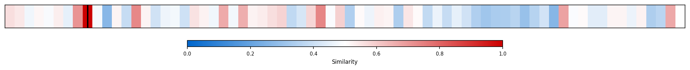
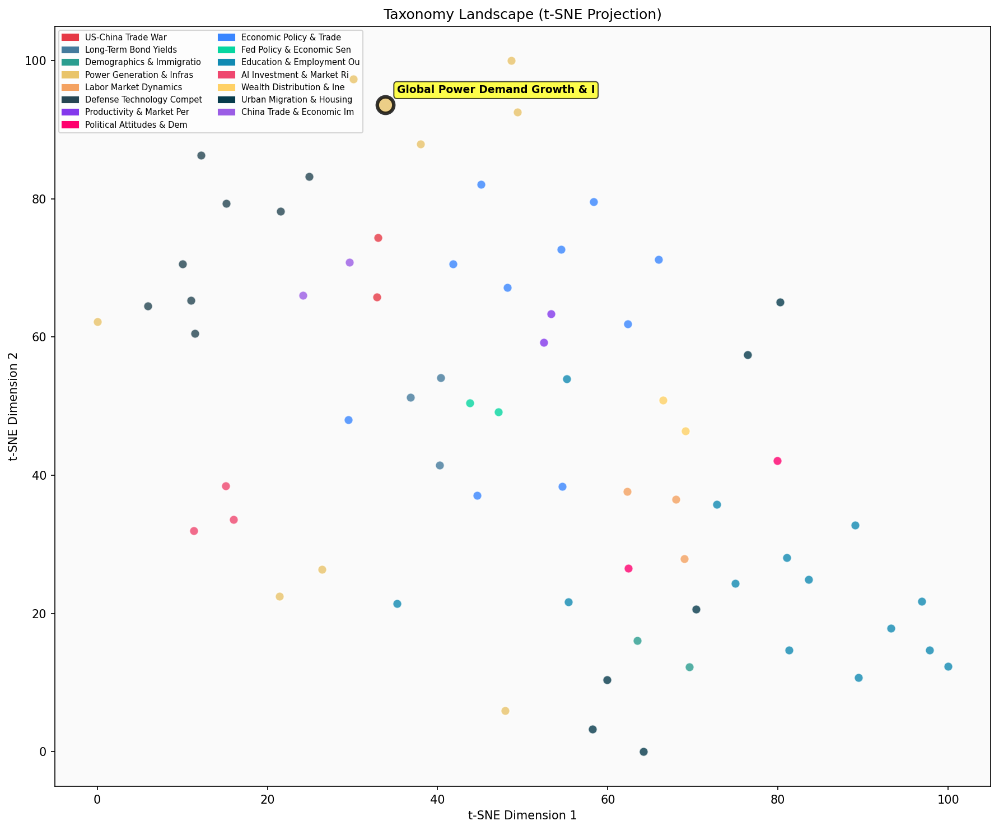

Description
This subcluster examines worldwide electricity demand patterns, capacity expansion, and capital allocation across power generation technologies. Articles feature quantitative data from industry analysts like IEA and Goldman Sachs, tracking metrics such as generation capacity additions, transmission infrastructure buildout, and investment flows between renewable versus fossil fuel sectors. Coverage spans regional comparisons of power production scales, corporate energy procurement strategies, and demand drivers including data centers and industrial electrification. Unlike the sibling subcluster focused on US energy export capabilities, this grouping emphasizes consumption-side dynamics and the global transition toward renewable generation capacity to meet accelerating electricity demand growth.
Similarity to All 70 Subclusters
Each cell represents a subcluster. Color intensity shows similarity (blue=low, red=high). Black line marks current subcluster position.
Relationship to Primary Clusters
Average similarity to each of the 15 primary clusters. Larger area = stronger relationship to that cluster.
Taxonomy Landscape
All 70 subclusters positioned by similarity (t-SNE). Current subcluster highlighted with label. Click to enlarge.
Network Connections
Current subcluster at center, connected to related subclusters. Line thickness = similarity strength.
Most Representative Articles
-
1. In 2023, US fixed asset investment for electrical generation, storage, and distribution was $208.5B
-
2. Goldman estimates overall American power demand is accelerating to a 2.5% CAGR (a growth rate not se
-
3. Global electricity demand is forecast to rise by 40–50% by 2035. Only 10% of this growth is due to A
-
4. Bank of America forecasts US electrical demand will increase at a 2.5% CAGR btw 2024 and 2035 relati
-
5. Chinese datacenters can secure power for ~3 cents a kilowatt-hour using long-term purchase agreement
Edge Cases (Boundary Articles)
-
1. Amazon is planning on spending at least $148B over the next 15 years to build and operate data centeThis article is borderline because while Amazon's $148B data center investment will significantly increase global power demand (fitting the cluster's focus on electricity demand growth), the article specifically emphasizes Amazon's capital expenditure for data center infrastructure rather than broader power generation capacity or investment trends. The content is more aligned with AI/tech infrastructure spending than with comprehensive analysis of global electricity demand patterns and power sector investment allocation.
-
2. As of 2016, 90% of US and Japanese households are equipped with air conditioning, compared with 60%This article is borderline because while it contains quantitative data about infrastructure penetration that could relate to future power demand growth, it focuses primarily on current air conditioning adoption rates across specific countries rather than directly discussing electricity demand patterns, capacity expansion, or investment trends in power generation. The data is more descriptive of current household equipment penetration than analytical of power sector investment or demand growth dynamics.
-
3. AI servers could use 0.5% of the world’s electrical generation by 2027. For context, data centers cThis article is borderline because while it contains quantitative data about electrical demand (fitting the cluster's focus), it specifically discusses AI servers' energy consumption rather than broader global power demand patterns or investment in power generation technologies. The content is more narrowly focused on AI infrastructure's energy impact rather than the comprehensive electricity demand and capacity expansion trends that define this cluster.
Original Dendrogram